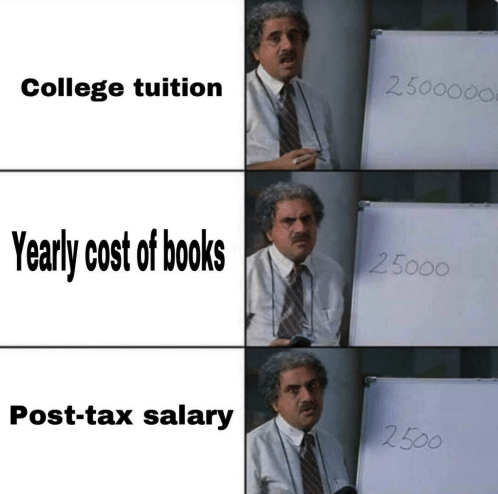
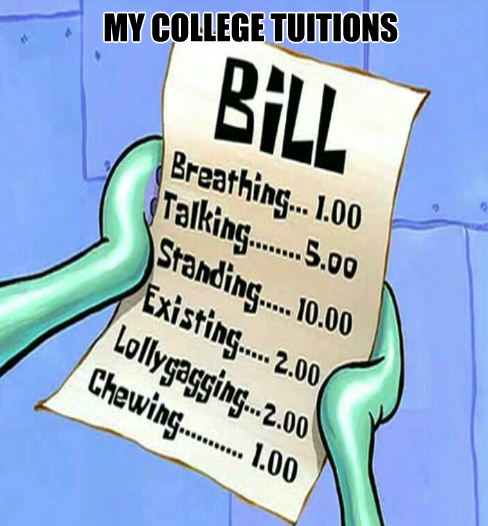
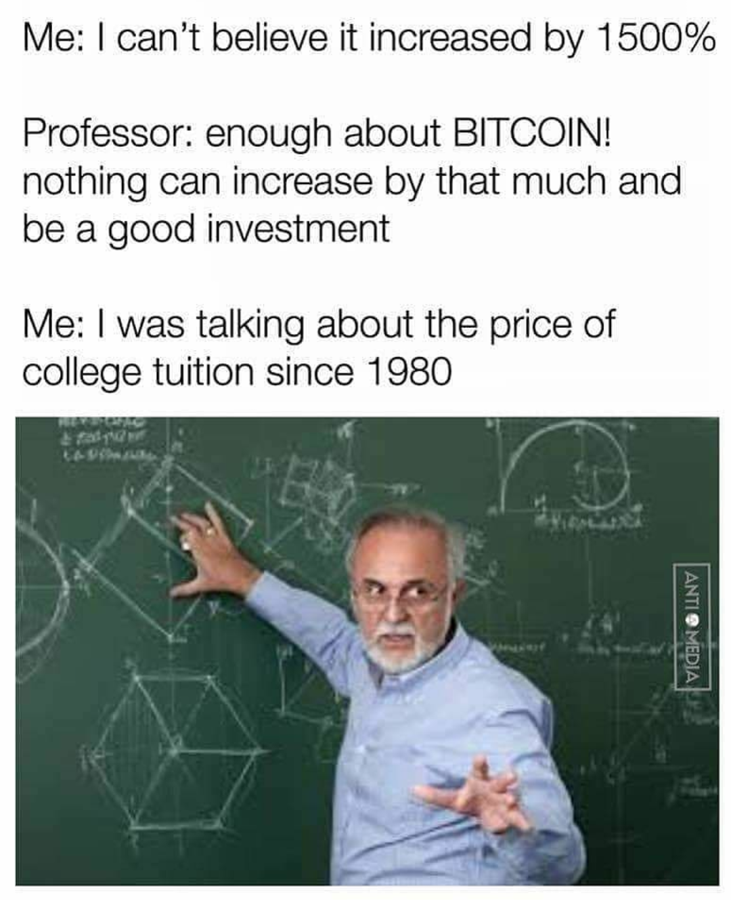
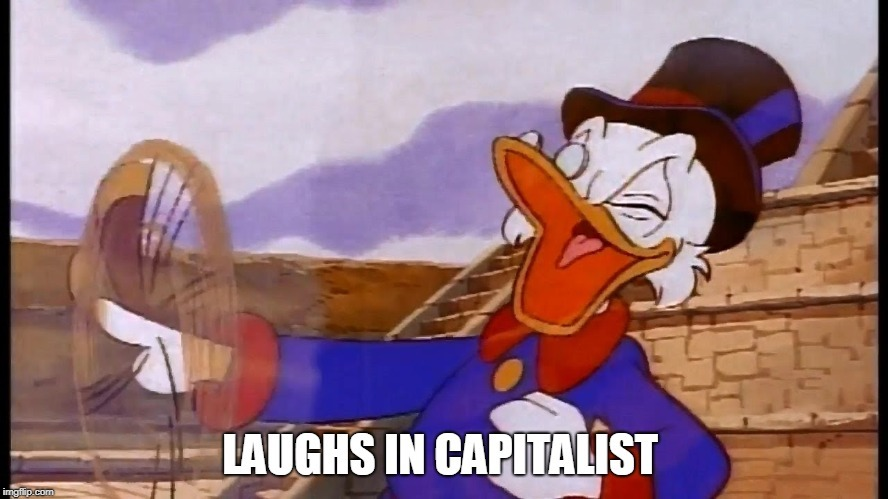

College Education
Let's start the conversation with this.
Meme Alert

In both the East and the West, it is common to regard education as a tool to help find a good job. People believe that education can change their destiny and become a channel for upward movement of different social classes.
However, the turbulent job market and the rising tuition don't say so. As a college student, the mismatch of the invest (the college education) and the return (a good job) makes me doubt if this common notion on education is even right. So I made some research and visualized some data to figure out if college education has ever been "a channel for upward movement of different social classes".
The following research are mainly focusing on two college types: public 4-year out-of-state and private 4-year (Students enrolled in these two types are usually charged the most).
College Tuition Components
Seriously though, we are paying more than just "tuition". College usually charges the sum of “tuition and fees” and “room and board” (TFRB). It’s also called the “sticker price”. Another term “Net TFRB” stands for the TFRB subtracting the grants and scholarships, it’s also called “net price”. The money we have to pay is the net price, not the sticker price. In addition, there are also other kinds of expenses, such as book fees, personal expenses, and transportation, but they are not counted into your tuition.
This is what you are paying for college in 2019.
(TFRB composition)Growth in Price
Well, 1500% might be a little crazy, but let's take a look at how much tuition has really risen in the past 20 years, from 1990 to 2019. To make the data more understandable, the amount are all in 2019 dollar, which means inflation is considered.
(TFRB and Net TFRB amount chart) (TFRB and Net TFRB growth-rate chart)Theories about Tuition Rise
There are several theories on the causes of tuition rises. Here are some interesting ones.
The Bennett Hypothesis
In 1987, then-Education Secretary Willian J. Bennett made an argument that federal loan is a main cause of the tuition rise. In his work *Our Greedy Colleges*, he said:
If anything, increases in financial aid in recent years have enabled colleges and universities blithely to raise their tuitions, confident that Federal loan subsidies would help cushion the increase … Federal student aid policies do not cause college price inflation, but there is little doubt that they help make it possible.
So, how much has student loan changed in the past 20 years?
(student loan amount change and TFRB change)It seems like there is no such positive correlation between tuition rise and student loan. Yes, Bennet revised his hypothesis in 2013 as follows:
If the federal government gives money, tuition goes up. If the federal government doesn’t give money, it goes up … Federal student aid makes it easier for colleges to do what they’re going to do anyway, which is raise tuition.
Baumol's Cost Disease
This is a complicated one, it's the rise of salaries in jobs that have experienced no or low increase of labor productivity, in response to rising salaries in other jobs that have experienced higher labor productivity growth. Simply it means, people doing jobs that can't be measured by labor productivity are paid more based on the years they have done the job.
When it comes to education, it means college has to pay higher salaries year by year. It's reasonable for the students to pay more tuition to cover the cost, as they are the direct beneficiary.
OK, let's take a look at the salary of college professor.
(college professor salary)Job Market
For college students, there are three scenarios after graduation: find a dream job, get underemployed (which means you don't necessarily need a degree to do the job), or get unemployed. Let's see how college graduates are doing in the job market.
Considering experience as a factor, let's see if there is a difference in new college graduates and experienced college graduates too.
Unemployment
(unemployment chart)Underemployment
(underemployment chart)Wages
(wage chart) Conclusion
To be written...